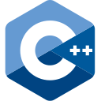
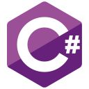

2026 – 2027 (Expected) · New York, NY Now
Columbia University
M.S. in Artificial Intelligence · AI Infrastructure track
Software Engineer · AI Infrastructure · New York
Open to Summer 2027 SWE & AI Infrastructure internships
Scroll2026 – 2027 (Expected) · New York, NY Now
M.S. in Artificial Intelligence · AI Infrastructure track
2022 – 2026 · Taoyuan, Taiwan
B.S. in Computer Science & Information Engineering
Presidential Award, top 5% of class · Dean's Award, top 10% of class
Now studying AI Infrastructure at Columbia University in New York, after a year shipping production systems at Garmin as a computer science student at National Central University.
Jul 2025 –
Jun 2026
Software Engineering Intern
Full-stack on the APAC B2B team: 43 tickets shipped across 8 markets. Helped re-architect three legacy monoliths into Vue + Spring Boot services, and drove a Java 8→21 migration with centralized observability (ELK, OpenTelemetry, Sentry) across 9+ services.
Jul 2024 –
Aug 2024
Engineering Intern
Analyzed a million-plus purchase records with pandas; built a scikit-learn revenue model that improved forecasting accuracy by 22%, and an AI customer-service chatbot on Gemini.
Jul 2023 –
Jun 2025
Research Assistant
Co-led a four-person team building an educational math game in Unity, with AI that generates problems tuned to each student's skill level.
Student-led campus app that streamlines access to university services and events. Led the event creation and management features.
Adaptive math game for elementary students; AI generates problems tuned to each player's skill. Built with a planner, an artist, and programmers.

C / C++
C#Detectors of state-sponsored influence campaigns must generalize to countries never seen in training. We trace the zero-shot failure of a state-of-the-art graph foundation model to coverage heterogeneity across behavioral sub-networks — not distribution shift — and fix it with coverage-gated channel fusion, raising average zero-shot F1-macro across six countries from 0.775 to 0.952 while keeping the full margin with only 10% of the labeled training data.